培训记｜2024河南省五子棋三级裁判员培训班
桂花墙上的梦 优皮士般的路
我打算在黎明的时候出发，搭一辆车向南方。今天那里有场学习的盛宴。
我急忙穿好衣服推门而出，迎面扑来是街上寒冷的欲望。我轻轻一跃跳进人的河里。
我坐在一座深绿色的车里，摇摇晃晃行驶在旷野的城市。
可突然这一切都将消失。沿途有祛色的幻梦和旧轮胎上的墓志铭。
继续走，继续失去。在我没有完全意识到的青春。
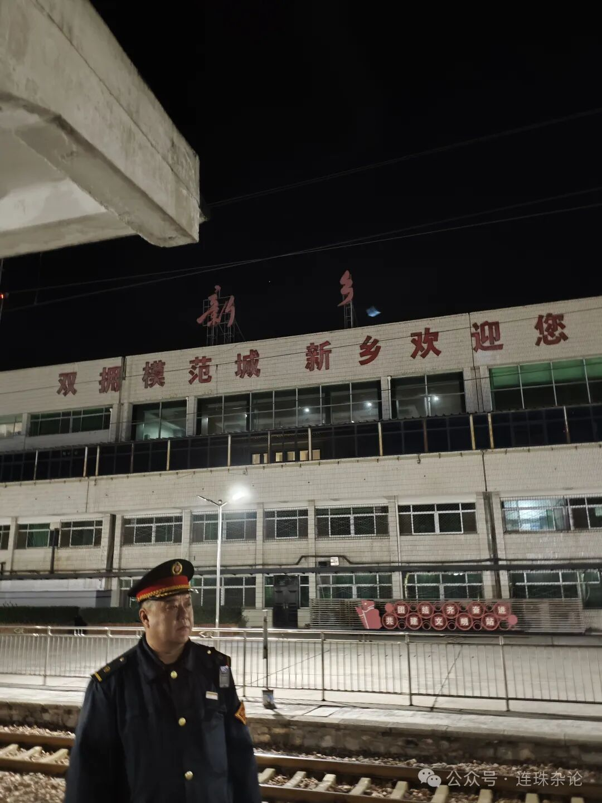
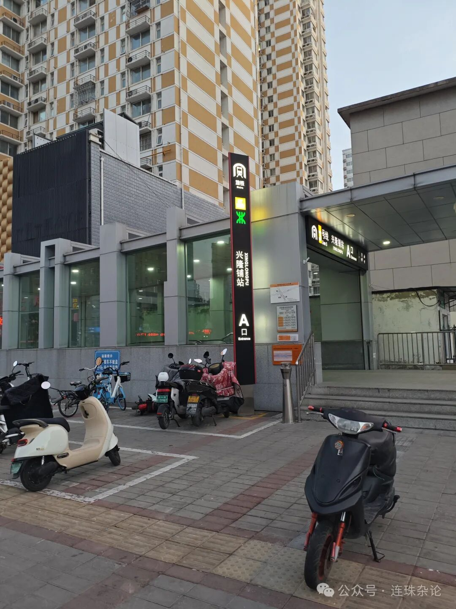
这是2024年的冬天，人们都蜷缩在大衣里行色匆匆。今年俯仰即是的郑州行，回到金水北与惠济交错的时刻。鞋子里满载着时代的沙粒，二七广场上镌刻着七点的太阳。门外的人等待着方向，而门内是一座无主之城。八点推开大门，目睹金碧辉煌的会场。几本资料睡在公文包里，迎接了复苏的时刻。三级裁判员培训班昂首阔步走来了。宛如大溪地的一次冲浪。
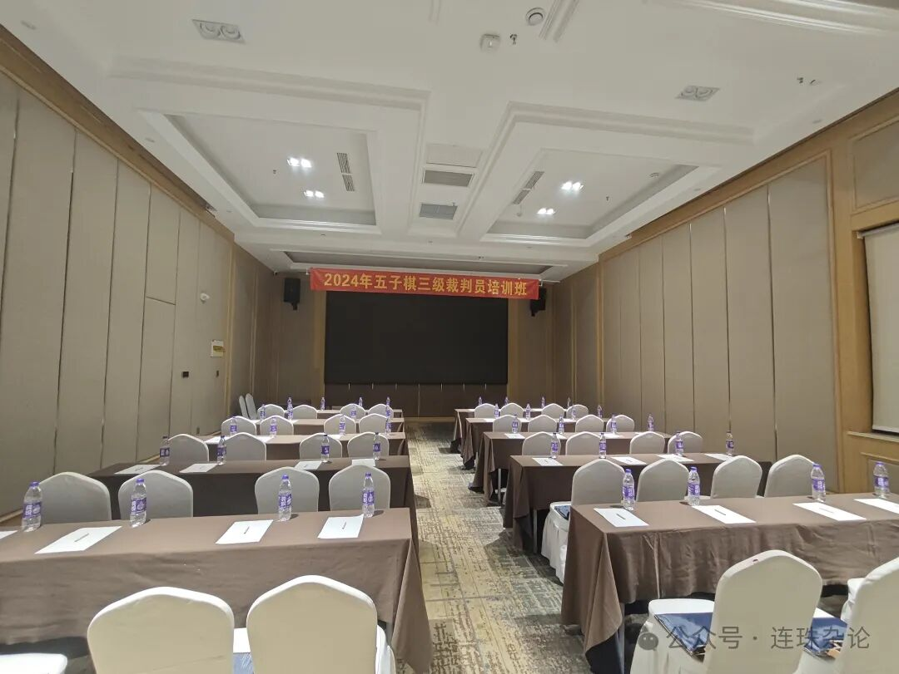
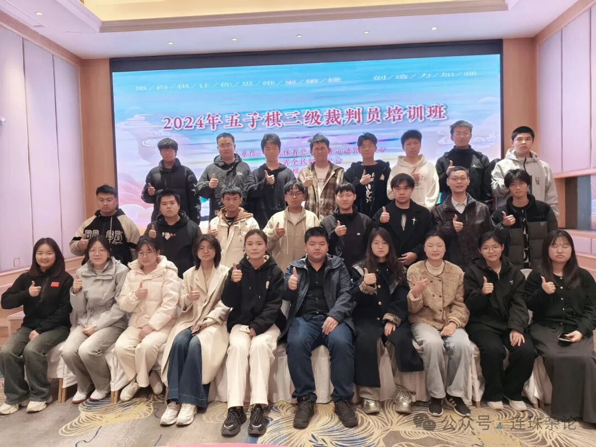
长大了的童子军们陆续前来，带着鸽子的口信。业已就位了。突然间我瞥见左上方的来者，像一位久仰大名却未曾谋面的干事，朱建锋六段。仰望其能力和气质，赞叹主办方的准备与强大。
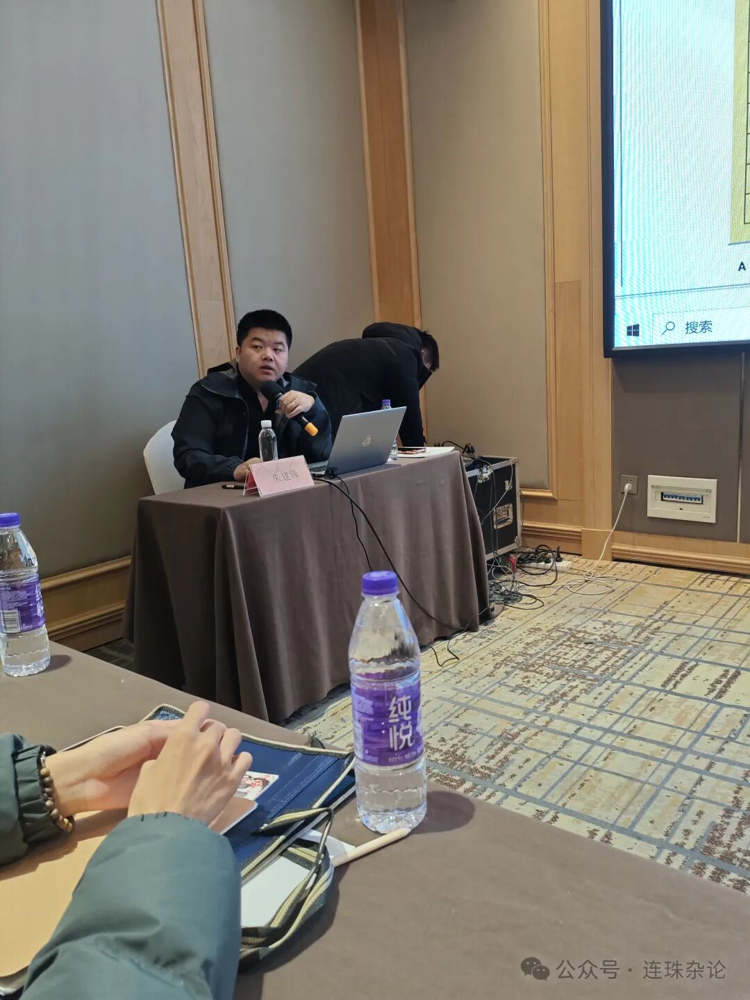
上午先盖大楼的地基，于我而言是温故知新的锻炼。偶然回望来者，连珠之城的新人，心中泛起汹涌的浪花。他们的笔记，宛如一座二十四小时营业专卖店，专卖店贩卖着库存的连珠文明。他们已然可以审视着无望地连六和棒胜的“城外人”，观他们的踉跄，忆自己的蹒跚。连珠之光让拥有理想但理论褴褛的新人有了方向。讲解完毕，越过锈桥，停息在这座正午太阳正好下的低塔，已有很多不同。
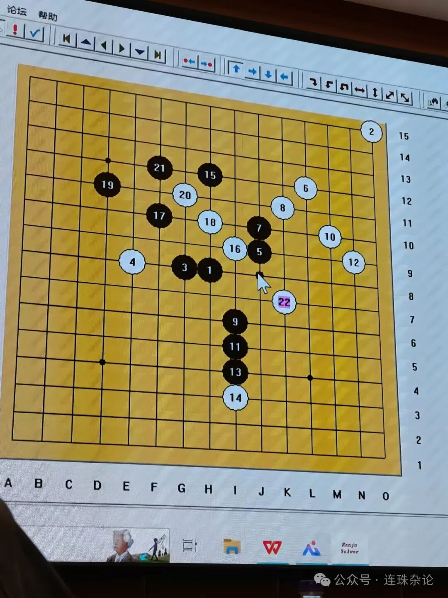
接着是大概三刻钟时间的对局练习。开启塔拉山口-10的旅途。墨守成规的开局，可预见的十余步。对方并非等闲之辈，欺骗全然成为正招。无垠的失落雾雨？或是老槭树下笑着哭的行者？从第18手开始，陌生吞噬了熟悉，唯一在铝合楼群内抗议，宣告着第19手必然的失误，预言着全盘输出的无力。后面再佯攻一步，果然跟防，自然要T掉。要领悟，不是头千里马，也能跑八百里。前浪们说我们是奇迹的一代，未经专业训练，无师自通。我想说我们属于Z时代里有天赋但行动不力的一代，赶上第二班车，走向新二街，但灵魂并不二手。我的对手也一样，我们的对手都同样，罕见的一切在我们这边。
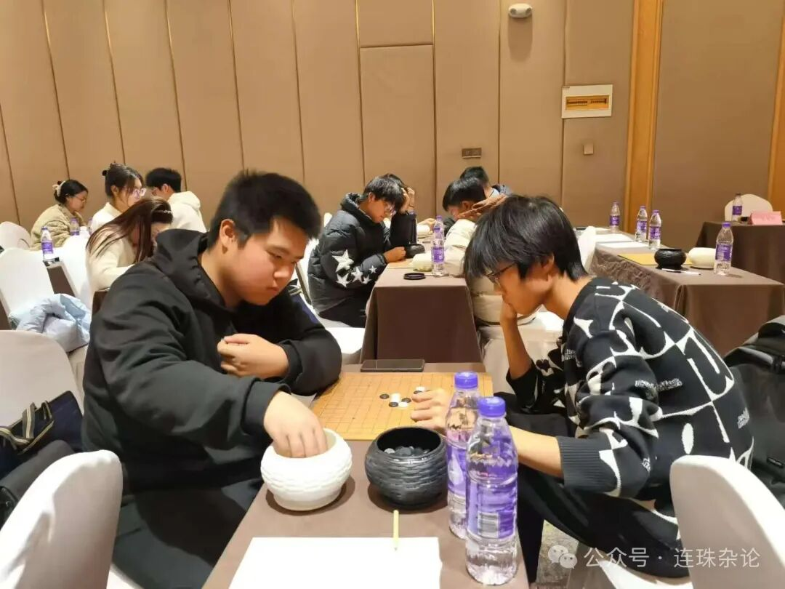
午休过后，来到下午。金号角继续吹响。李庆琳老师带大家积蓄芳华。裁判生涯趣味无穷，宛如一场波西米亚式的考试。在这场考试中，有一位东南方的天才少年喜好古老的瑞星，迫使假努力的孩子们接受了痛彻心扉的惆怅。而目睹这场考试的老大老二与后进的外援家们伫立在一隅，偿还着生涯中透支的十年利息。考试规则的组成者FIDE和SP98T是两个北方男孩，却从小向往美国南方。后来他们都娶了“调整”的佐治亚姑娘，进行着那不符预期的生活。兴许在考试中，有考生使用庞贝城的废墟与进化论的真理来挑战规则，朋友，加德满都下沐浴熙光的裁判员，请别忘了使用达摩克利斯之剑来斩断那满目疮痍的说辞。就让我们继续欣赏细节，欣赏裁判的艺术与魅力。在明确定位后摆正位置，在发现矛盾后解决问题，为成为一位优秀的五子棋裁判员而矢志不渝。
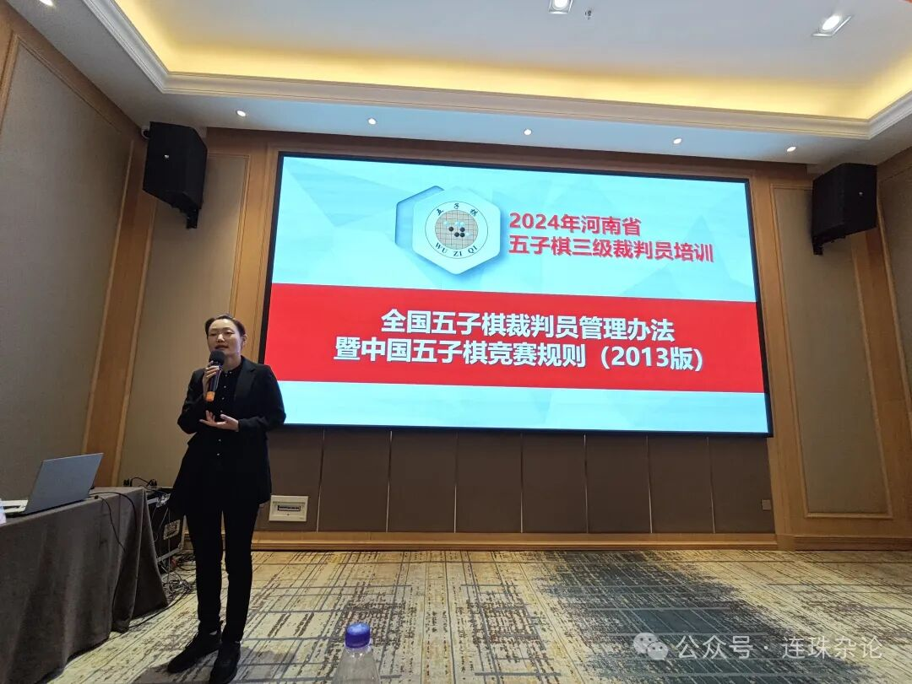
醒来后第二天，开展三轮比赛及考试。老街杂货店播放着《美丽世界的孤儿》，如同考场上不知所措的伤悲。十一年前的那些往事是否符合发展？忝列在排行大榜的过客消失在磅礴烟花中。时光流走了，姗姗来迟的人依然在这，宛如掉进一条笔直的国道，不看左右，只顾快马加鞭。可终有一天梦碎成六十四块，在忏悔后猛敲大门希望得到不啻再造的机会，可那个天使不会出现，因为64块是不合理的。而善良的人们在荡动过后，把自己分成两半，一半拼命抵抗，拒绝明天的歌谣；另一半哭着飞翔，像个孩子一样，向着繁星倾诉，对着月亮呢喃。周遭水洗过的崭新，各司其职的结果有目共睹。
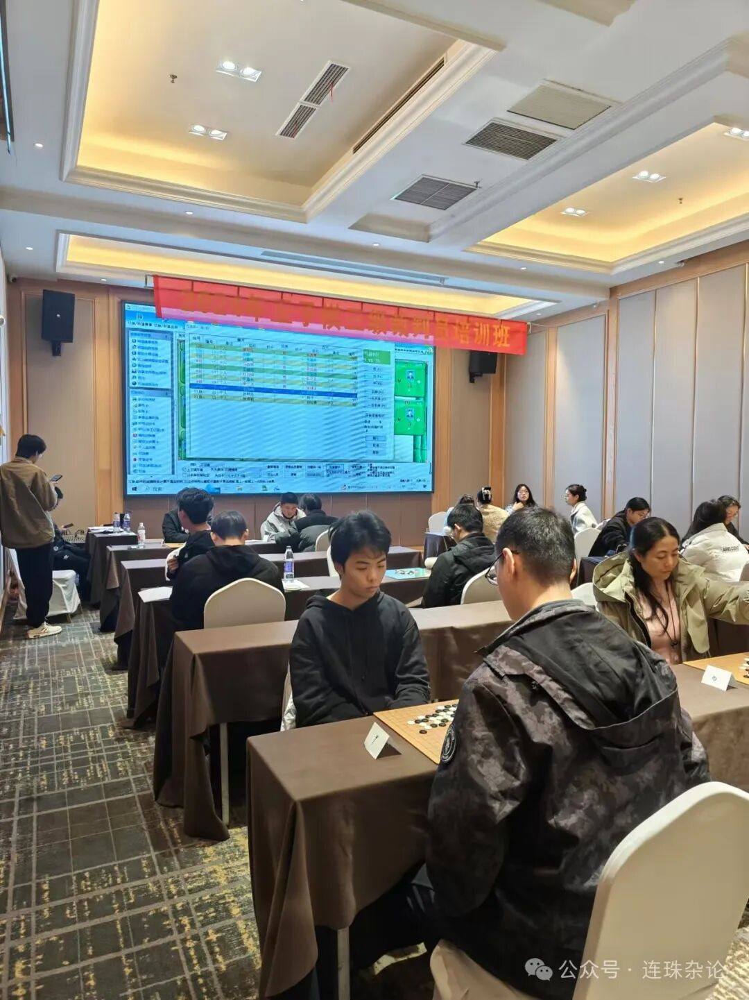
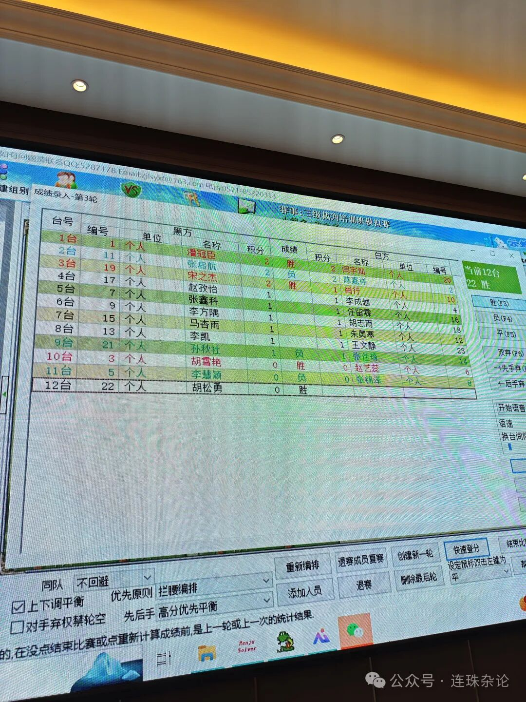
门开了。我看到的是飘扬的红旗。伴着希望的钟声，取走考场上的那颗明珠，期待着下次的旅途。
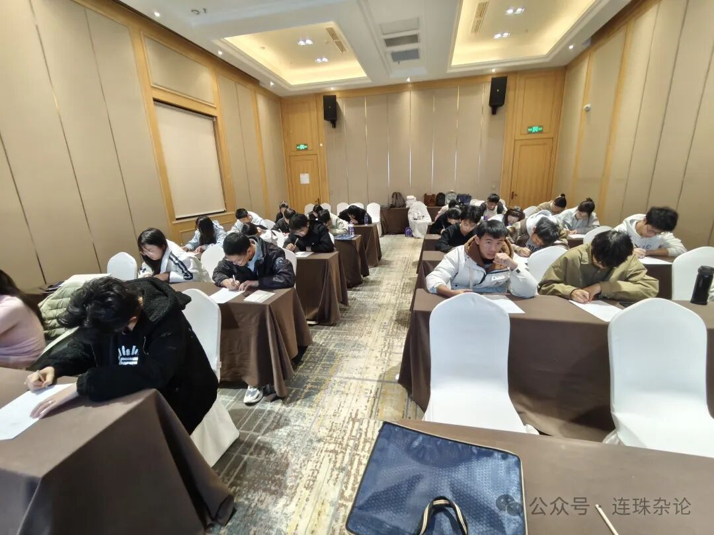
大多数周六的夜晚，我都待在城北的那座星之塔里。伴着广告牌下的灯光，感受依偎怀抱的声息。亚麻色心脏有时抽泣，霓虹果冻铺满在田地。通常我会走上这条路，天鹅绒般的黄昏里诉说叮咛。
伤心过后，折磨过后，绝望过后，恨过后，不要放弃。我们都知道，那段早五晚十一的生活布满荆棘。朋友，别忘了，后面还有一段路等待着你攀行。你一定可以的。